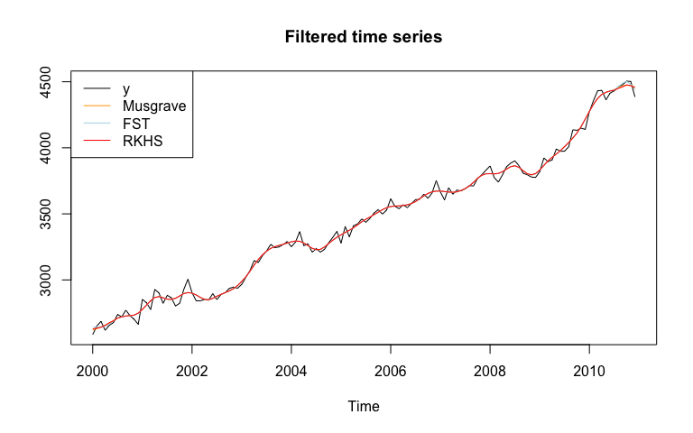
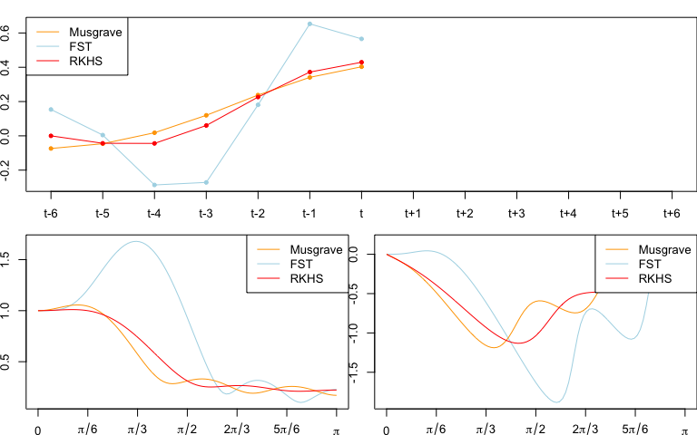

rjd3filters is an R package on linear filters for real-time trend-cycle estimates. It allows to create symmetric and asymmetric moving averages with:
local polynomial filters, as defined by Proietti and Luati (2008);
the FST approach of Grun-Rehomme, Guggemos, and Ladiray (2018), based on the optimization of the three criteria Fidelity, Smoothness and Timeliness;
the Reproducing Kernel Hilbert Space (RKHS) of Dagum and Bianconcini (2008).
Some quality criteria defined by Wildi and McElroy (2019) can also be computed.
Installation
rjd3filters relies on the rJava package.
Running rjd3 packages requires Java 17 or higher. How to set up such a configuration in R is explained here.
Latest release
To get the current stable version (from the latest release):
- From GitHub:
# install.packages("remotes")
remotes::install_github("rjdverse/rjd3toolkit@*release")
remotes::install_github("rjdverse/rjd3filters@*release")- From r-universe:
install.packages("rjd3filters", repos = c("https://rjdverse.r-universe.dev", "https://cloud.r-project.org"))Basic example
In this example we use the same symmetric moving average (Henderson), but we use three different methods to compute asymmetric filters. As a consequence, the filtered time series is the same, except at the boundaries.
library("rjd3filters")
y <- window(retailsa$AllOtherGenMerchandiseStores, start = 2000)
musgrave <- lp_filter(horizon = 6, kernel = "Henderson", endpoints = "LC")
# we put a large weight on the timeliness criteria
fst_notimeliness_filter <- lapply(0:6, fst_filter,
lags = 6, smoothness.weight = 1/1000,
timeliness.weight = 1-1/1000, pdegree =2)
fst_notimeliness <- finite_filters(sfilter = fst_notimeliness_filter[[7]],
rfilters = fst_notimeliness_filter[-7],
first_to_last = TRUE)
# RKHS filters minimizing timeliness
rkhs_timeliness <- rkhs_filter(horizon = 6, asymmetricCriterion = "Timeliness")
trend_musgrave <- filter(y, musgrave)
trend_fst <- filter(y, fst_notimeliness)
trend_rkhs <- filter(y, rkhs_timeliness)
plot(ts.union(y, trend_musgrave, trend_fst, trend_rkhs), plot.type = "single",
col = c("black", "orange", "lightblue", "red"),
main = "Filtered time series", ylab=NULL)
legend("topleft", legend = c("y", "Musgrave", "FST", "RKHS"),
col= c("black", "orange", "lightblue", "red"), lty = 1)
The last estimates can also be analysed with the implicit_forecast function that retreive the implicit forecasts corresponding to the asymmetric filters (i.e., the forecasts needed to have the same end-points estimates but using the symmetric filter).
f_musgrave <- implicit_forecast(y, musgrave)
f_fst <- implicit_forecast(y, fst_notimeliness)
f_rkhs <- implicit_forecast(y, rkhs_timeliness)
plot(window(y, start = 2007),
xlim = c(2007, 2012), ylim = c(3600, 4600),
main = "Last estimates and implicit forecast", ylab=NULL)
lines(trend_musgrave,
col = "orange")
lines(trend_fst,
col = "lightblue")
lines(trend_rkhs,
col = "red")
lines(ts(c(tail(y, 1), f_musgrave), frequency = frequency(y), start = end(y)),
col = "orange", lty = 2)
lines(ts(c(tail(y, 1), f_fst), frequency = frequency(y), start = end(y)),
col = "lightblue", lty = 2)
lines(ts(c(tail(y, 1), f_rkhs), frequency = frequency(y), start = end(y)),
col = "red", lty = 2)
legend("topleft", legend = c("y", "Musgrave", "FST", "RKHS", "Forecasts"),
col= c("black", "orange", "lightblue", "red", "black"),
lty = c(1, 1, 1, 1, 2))
The real-time estimates (when no future points are available) can also be compared:
trend_henderson<- filter(y, musgrave[, "q=6"])
trend_musgrave_q0 <- filter(y, musgrave[, "q=0"])
trend_fst_q0 <- filter(y, fst_notimeliness[, "q=0"])
trend_rkhs_q0 <- filter(y, rkhs_timeliness[, "q=0"])
plot(window(ts.union(y, trend_musgrave_q0, trend_fst_q0, trend_rkhs_q0),
start = 2007),
plot.type = "single",
col = c("black", "orange", "lightblue", "red"),
main = "Real time estimates of the trend", ylab=NULL)
legend("topleft", legend = c("y", "Musgrave", "FST", "RKHS"),
col= c("black", "orange", "lightblue", "red"), lty = 1)
Comparison of the filters
Different quality criteria from Grun-Rehomme et al (2018) and Wildi and McElroy(2019) can also be computed with the function diagnostic_matrix():
q_0_coefs <- list(Musgrave = musgrave[, "q=0"],
fst_notimeliness = fst_notimeliness[, "q=0"],
rkhs_timeliness = rkhs_timeliness[, "q=0"])
sapply(X = q_0_coefs,
FUN = diagnostic_matrix,
lags = 6,
sweights = musgrave[, "q=6"])
#> Musgrave fst_notimeliness rkhs_timeliness
#> b_c 0.000000000 2.220446e-16 0.000000000
#> b_l -0.575984377 -1.554312e-15 -0.611459167
#> b_q -1.144593858 1.554312e-15 0.027626749
#> F_g 0.357509832 9.587810e-01 0.381135700
#> S_g 1.137610871 2.402400e+00 1.207752284
#> T_g 0.034088260 4.676398e-04 0.023197411
#> A_w 0.008306348 1.823745e-02 0.003677964
#> S_w 0.449956378 3.575634e+00 0.628156109
#> T_w 0.061789932 7.940547e-04 0.043540181
#> R_w 0.299548665 1.721377e-01 0.219948644The filters can also be compared by plotting there coefficients (plot_coef), gain function (plot_gain) and phase function (plot_phase):
def.par <- par(no.readonly = TRUE)
par(mai = c(0.3, 0.3, 0.2, 0))
layout(matrix(c(1, 1, 2, 3), 2, 2, byrow = TRUE))
plot_coef(fst_notimeliness, q = 0, col = "lightblue")
plot_coef(musgrave, q = 0, add = TRUE, col = "orange")
plot_coef(rkhs_timeliness, q = 0, add = TRUE, col = "red")
legend("topleft", legend = c("Musgrave", "FST", "RKHS"),
col= c("orange", "lightblue", "red"), lty = 1)
plot_gain(fst_notimeliness, q = 0, col = "lightblue")
plot_gain(musgrave, q = 0, col = "orange", add = TRUE)
plot_gain(rkhs_timeliness, q = 0, add = TRUE, col = "red")
legend("topright", legend = c("Musgrave", "FST", "RKHS"),
col= c("orange", "lightblue", "red"), lty = 1)
plot_phase(fst_notimeliness, q = 0, col = "lightblue")
plot_phase(musgrave, q = 0, col = "orange", add = TRUE)
plot_phase(rkhs_timeliness, q = 0, add = TRUE, col = "red")
legend("topright", legend = c("Musgrave", "FST", "RKHS"),
col= c("orange", "lightblue", "red"), lty = 1)
par(def.par)
Confidence intervals can also be computed with the confint_filter function:
confint <- confint_filter(y, musgrave)
plot(confint, plot.type = "single",
col = c("red", "black", "black"),
lty = c(1, 2, 2), xlab = NULL, ylab = NULL)
lines(y, col = "grey")
legend("topleft", legend = c("y", "Smoothed", "CI (95%)"),
col= c("grey", "red", "black"), lty = c(1, 1, 2))
Manipulate moving averages
You can also create and manipulate moving averages with the class moving_average. In the next examples we show how to create the M2X12 moving average, the first moving average used to extract the trend-cycle in X-11, and the M3X3 moving average, applied to each months to extract seasonal component.
e1 <- moving_average(rep(1, 12), lags = -6)
e1 <- e1/sum(e1)
e2 <- moving_average(rep(1/12, 12), lags = -5)
M2X12 <- (e1 + e2)/2
coef(M2X12)
#> t-6 t-5 t-4 t-3 t-2 t-1 t
#> 0.04166667 0.08333333 0.08333333 0.08333333 0.08333333 0.08333333 0.08333333
#> t+1 t+2 t+3 t+4 t+5 t+6
#> 0.08333333 0.08333333 0.08333333 0.08333333 0.08333333 0.04166667
M3 <- moving_average(rep(1/3, 3), lags = -1)
M3X3 <- M3 * M3
# M3X3 moving average applied to each month
M3X3
#> [1] "0.1111 B^2 + 0.2222 B + 0.3333 + 0.2222 F + 0.1111 F^2"
M3X3_seasonal <- to_seasonal(M3X3, 12)
# M3X3_seasonal moving average applied to the global series
M3X3_seasonal
#> [1] "0.1111 B^24 + 0.2222 B^12 + 0.3333 + 0.2222 F^12 + 0.1111 F^24"
def.par <- par(no.readonly = TRUE)
par(mai = c(0.5, 0.8, 0.3, 0))
layout(matrix(c(1, 2), nrow = 1))
plot_gain(M3X3, main = "M3X3 applied to each month")
plot_gain(M3X3_seasonal, main = "M3X3 applied to the global series")
par(def.par)
# To apply the moving average
t <- y * M2X12
si <- y - t
s <- si * M3X3_seasonal
# or equivalently:
s_mm <- M3X3_seasonal * (1 - M2X12)
s <- y * s_mmManipulate finite filters
finite_filters object are a combination of a central filter (used for the final estimates) and different asymmetric filters used for intermediate estimates at the beginning/end of the series when the central filter cannot be applied.
musgrave
#> q=6 q=5 q=4 q=3 q=2
#> t-6 -0.01934985 -0.016609040 -0.011623676 -0.009152423 -0.016139228
#> t-5 -0.02786378 -0.025914479 -0.022541271 -0.020981640 -0.024948087
#> t-4 0.00000000 0.001157790 0.002918842 0.003566851 0.002620762
#> t-3 0.06549178 0.065858066 0.066006963 0.065743350 0.067817618
#> t-2 0.14735651 0.146931288 0.145468029 0.144292794 0.149387420
#> t-1 0.21433675 0.213120014 0.210044599 0.207957742 0.216072726
#> t 0.24005716 0.238048915 0.233361346 0.230362866 0.241498208
#> t+1 0.21433675 0.211536998 0.205237273 0.201327171 0.215482871
#> t+2 0.14735651 0.143765257 0.135853376 0.131031652 0.148207710
#> t+3 0.06549178 0.061109020 0.051584983 0.045851637 0.000000000
#> t+4 0.00000000 -0.005174272 -0.016310464 0.000000000 0.000000000
#> t+5 -0.02786378 -0.033829557 0.000000000 0.000000000 0.000000000
#> t+6 -0.01934985 0.000000000 0.000000000 0.000000000 0.000000000
#> q=1 q=0
#> t-6 -0.037925830 -0.07371504
#> t-5 -0.035216813 -0.04601336
#> t-4 0.003869912 0.01806602
#> t-3 0.080584644 0.11977342
#> t-2 0.173672322 0.23785375
#> t-1 0.251875504 0.34104960
#> t 0.288818862 0.40298562
#> t+1 0.274321400 0.00000000
#> t+2 0.000000000 0.00000000
#> t+3 0.000000000 0.00000000
#> t+4 0.000000000 0.00000000
#> t+5 0.000000000 0.00000000
#> t+6 0.000000000 0.00000000
musgrave * M3X3
#> q=6 q=5 q=4 q=3 q=2
#> t-8 -0.002149983 -0.001845449 -0.001291520 -0.0010169359 -0.001793248
#> t-7 -0.007395941 -0.006570284 -0.005087625 -0.0043651651 -0.006358505
#> t-6 -0.012641899 -0.011166476 -0.008559414 -0.0073170774 -0.010632566
#> t-5 -0.006311026 -0.004754208 -0.002114058 -0.0009303015 -0.003784842
#> t-4 0.022584742 0.023742532 0.025503585 0.0261515939 0.025205505
#> t-3 0.075295705 0.075661988 0.075810884 0.0755472713 0.077621540
#> t-2 0.137975973 0.137550748 0.136087489 0.1349122536 0.140006880
#> t-1 0.188629568 0.187412835 0.184337420 0.1822505629 0.190365547
#> t 0.208025720 0.206017479 0.201329910 0.1983314300 0.209466772
#> t+1 0.188629568 0.185829819 0.179530094 0.1756199919 0.182437019
#> t+2 0.137975973 0.134384717 0.126472836 0.1242017153 0.124120786
#> t+3 0.075295705 0.070912941 0.066564227 0.0667717095 0.056877588
#> t+4 0.022584742 0.020311263 0.021121328 0.0247483251 0.016467523
#> t+5 -0.006311026 -0.005636466 0.002107117 0.0050946263 0.000000000
#> t+6 -0.012641899 -0.008092598 -0.001812274 0.0000000000 0.000000000
#> t+7 -0.007395941 -0.003758840 0.000000000 0.0000000000 0.000000000
#> t+8 -0.002149983 0.000000000 0.000000000 0.0000000000 0.000000000
#> q=1 q=0
#> t-8 -0.004213981 -0.00819056
#> t-7 -0.012340941 -0.02149372
#> t-6 -0.020037912 -0.03278954
#> t-5 -0.010353070 -0.01439608
#> t-4 0.026454654 0.04065076
#> t-3 0.090388566 0.12957734
#> t-2 0.164291782 0.22847321
#> t-1 0.226168325 0.26940011
#> t 0.232502524 0.23654553
#> t+1 0.183608603 0.12744676
#> t+2 0.093051296 0.04477618
#> t+3 0.030480156 0.00000000
#> t+4 0.000000000 0.00000000
#> t+5 0.000000000 0.00000000
#> t+6 0.000000000 0.00000000
#> t+7 0.000000000 0.00000000
#> t+8 0.000000000 0.00000000Bibliography
Dagum, Estela Bee and Silvia Bianconcini (2008). “The Henderson Smoother in Reproducing Kernel Hilbert Space”. In: Journal of Business & Economic Statistics 26, pp. 536–545. URL: https://ideas.repec.org/a/bes/jnlbes/v26y2008p536-545.html.
Grun-Rehomme, Michel, Fabien Guggemos, and Dominique Ladiray (2018). “Asymmetric Moving Averages Minimizing Phase Shift”. In: Handbook on Seasonal Adjustment. URL: https://ec.europa.eu/eurostat/web/products-manuals-and-guidelines/-/KS-GQ-18-001.
Proietti, Tommaso and Alessandra Luati (Dec. 2008). “Real time estimation in local polynomial regression, with application to trend-cycle analysis”. In: Ann. Appl. Stat. 2.4, pp. 1523–1553. URL: https://doi.org/10.1214/08-AOAS195.
Wildi, Marc and Tucker McElroy (2019). “The trilemma between accuracy, timeliness and smoothness in real-time signal extraction”. In: International Journal of Forecasting 35.3, pp. 1072–1084. URL: https://EconPapers.repec.org/RePEc:eee:intfor:v
Package Maintenance and contributing
Any contribution is welcome and should be done through pull requests and/or issues. pull requests should include updated tests and updated documentation. If functionality is changed, docstrings should be added or updated.
Licensing
The code of this project is licensed under the European Union Public Licence (EUPL).